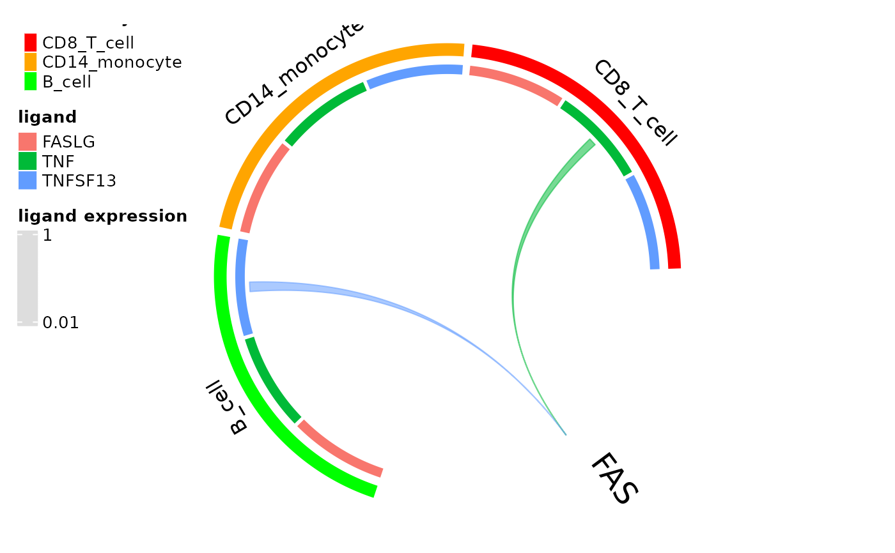
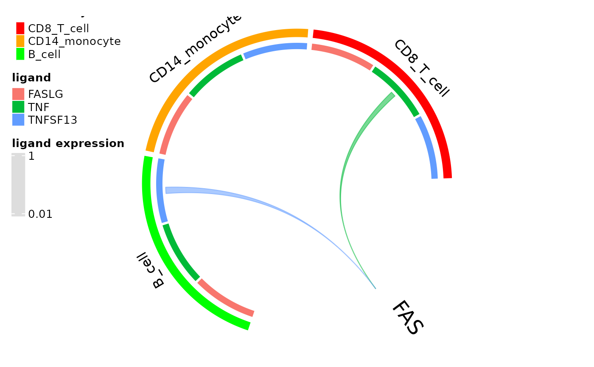

Plot expression of a receptor's ligands by other cell types as a chord plot
Source:R/plot_fxns.R
circos_ligand_receptor.RdCreates a chord plot of expression of ligands that can activate a specified receptor where chord widths correspond to mean ligand expression by the cluster.
Usage
circos_ligand_receptor(
dom,
receptor,
ligand_expression_threshold = 0.01,
cell_idents = NULL,
cell_colors = NULL
)Arguments
- dom
Domino object that has undergone network building with
build_domino()- receptor
Name of a receptor active in at least one cell type in the domino object
- ligand_expression_threshold
Minimum mean expression value of a ligand by a cell type for a chord to be rendered between the cell type and the receptor
- cell_idents
Vector of cell types from cluster assignments in the domino object to be included in the plot.
- cell_colors
Named vector of color names or hex codes where names correspond to the plotted cell types and the color values
Examples
# basic usage
circos_ligand_receptor(domino2:::pbmc_dom_built_tiny, receptor = "FAS")
#> There are more than one numeric columns in the data frame. Take the
#> first two numeric columns and draw the link ends with unequal width.
#>
#> Type `circos.par$message = FALSE` to suppress the message.
 # specify colors
cols <- c("red", "orange", "green", "blue", "pink", "purple", "slategrey", "firebrick", "hotpink")
names(cols) <- levels(domino2:::pbmc_dom_built_tiny@clusters)
circos_ligand_receptor(domino2:::pbmc_dom_built_tiny, receptor = "FAS", cell_colors = cols)
#> There are more than one numeric columns in the data frame. Take the
#> first two numeric columns and draw the link ends with unequal width.
#>
#> Type `circos.par$message = FALSE` to suppress the message.

# specify colors
cols <- c("red", "orange", "green", "blue", "pink", "purple", "slategrey", "firebrick", "hotpink")
names(cols) <- levels(domino2:::pbmc_dom_built_tiny@clusters)
circos_ligand_receptor(domino2:::pbmc_dom_built_tiny, receptor = "FAS", cell_colors = cols)
#> There are more than one numeric columns in the data frame. Take the
#> first two numeric columns and draw the link ends with unequal width.
#>
#> Type `circos.par$message = FALSE` to suppress the message.
